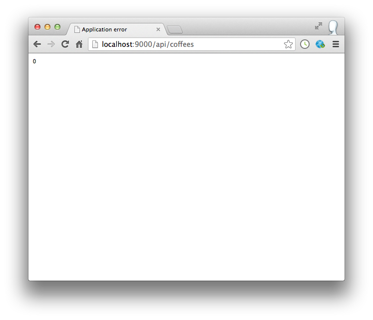
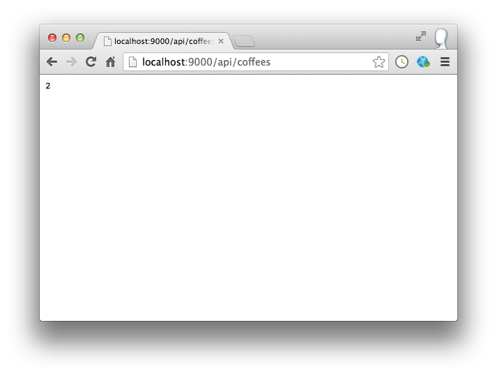
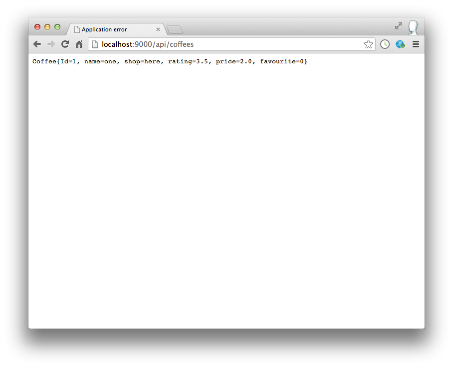
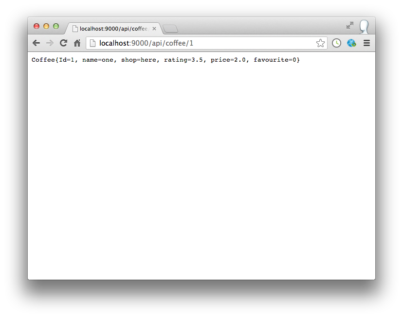
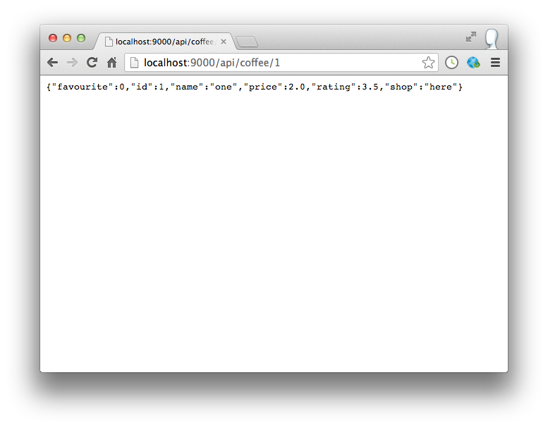
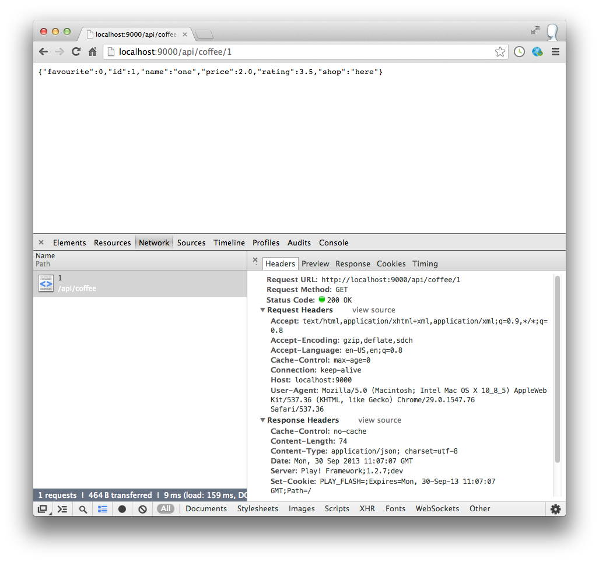
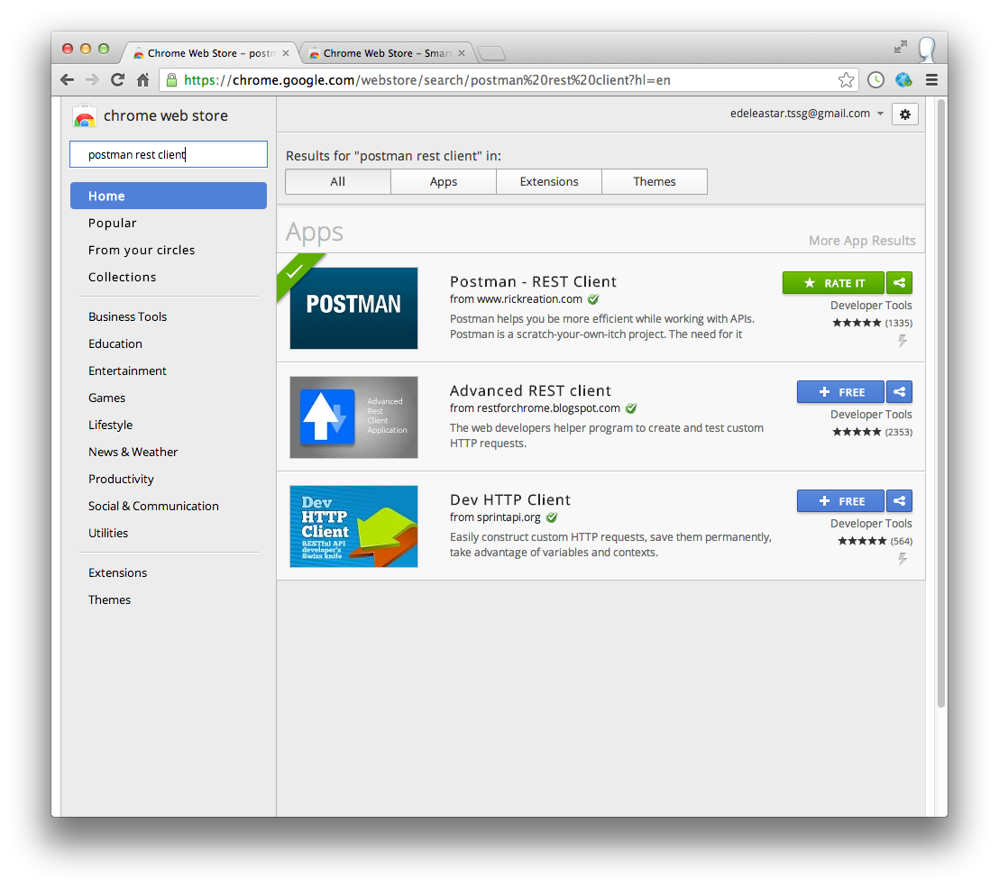

Create a new play project in the usual way - call this project 'coffeemate-service'.
Make sure you can launch the project in the usual way, and also that you can run the tests and browse the database (which will be empty).
Introduce the following model class:
package models;
import java.io.Serializable;
import javax.persistence.*;
import play.db.jpa.Model;
@Entity
public class Coffee extends Model
{
public String name;
public String shop;
public double rating;
public double price;
public int favourite;
public Coffee(String coffeeName, String shop, double rating, double price, int favourite)
{
this.name = coffeeName;
this.shop = shop;
this.rating = rating;
this.price = price;
this.favourite = favourite;
}
}
... and the following test to verify that the model is operating correctly:
import org.junit.*;
import java.util.*;
import play.test.*;
import models.*;
public class CoffeeTest extends UnitTest
{
@Test
public void testCreate()
{
Coffee coffee = new Coffee ("one", "here", 3.5, 2.0, 0);
coffee.save();
Coffee one = Coffee.findById(coffee.id);
assertEquals ("one", one.name);
}
}
Run the app in test mode, and make sure the test passes.
Often, the JDK libraries can be augmented with various extensions and utilities. Guava is one of the most prominent:
as it contains a range of useful classes. To use Guava in play, open the conf/dependencies.yml file:
# Application dependencies
require:
- play
and add on a single entry at the end:
- com.google.guava -> guava 14.0.1
make sure you line it up precisely - 4 leading spaces required. For this to be reflected in your project you need to do two things:
It will not cause any noticeable change in the project, although you should see some new jar files in the 'lib' folder.
We will use guava methods sparingly - but one useful one right away. Open Coffee.java, and import this class with the other imports:
import com.google.common.base.Objects;
Then include this new method on Coffee:
@Override
public boolean equals(final Object obj)
{
if (obj instanceof Coffee)
{
final Coffee other = (Coffee) obj;
return Objects.equal(name, other.name)
&& Objects.equal(shop, other.shop)
&& Objects.equal(rating, other.rating)
&& Objects.equal(price, other.price)
&& Objects.equal(favourite, other.favourite);
}
else
{
return false;
}
}
We have equipped our Model class with a useful 'equals' method - which will allow us to easily compare model Coffee objects. This will be particularly useful when writing tests.
Here is a rework of the singe test we have written:
@Test
public void testCreate()
{
Coffee coffee = new Coffee ("one", "here", 3.5, 2.0, 0);
coffee.save();
Coffee one = Coffee.findById(coffee.id);
assertEquals (coffee, one);
}
The only change is the last line - which now does a full compare of the two coffee objects.
Next we introduce a new route to read a coffee object:
GET /api/coffees CoffeeServiceAPI.getCoffees
Place this in the routes file - towards the top.
This is the corresponding controller:
public class CoffeeServiceAPI extends Controller
{
public static void getCoffees()
{
List<Coffee> coffee = Coffee.findAll();
renderText(coffee.size());
}
}
You may also wish to enable the default 'in memory' database at this stage in application.conf:
db=mem
Run the app now, and see what you get when you browse to:
You may see something like this:

To seed our application with some test data - we can bring in bootstrap.java into the app folder:
import java.util.List;
import play.*;
import play.jobs.*;
import play.test.*;
import models.*;
@OnApplicationStart
public class Bootstrap extends Job
{
public void doJob()
{
Fixtures.loadModels("data.yml");
}
}
.. and some test data in the conf/data.yml:
Coffee(c1):
name : one
shop : here
price : 2.0
rating : 3.5
favourite : 0
Coffee(c2):
name : two
shop : there
price : 3.0
rating : 4.5
favourite : 1
This procedure should be familiar. Launch the app again and browse to:
This time we should see the number 2:

Browse the database as well and verify that the two coffes'e have been loaded:
Back in Coffee, we can introduce a method, often included as a companion to equals(), called toString():
public String toString()
{
return Objects.toStringHelper(this)
.add("Id", id)
.add("name", name)
.add("shop", shop)
.add("rating", rating)
.add("price", price)
.add("favourite", favourite).toString();
}
This method will return a readable string version of any Coffee object. Useful for logging, testing or other purposes.
We are going to use it immediately to turn a Coffee object into a string, and send it in this form to a browser. Change the CoffeeService controller as follows:
public class CoffeeServiceAPI extends Controller
{
public static void getCoffees()
{
List<Coffee> coffees = Coffee.findAll();
renderText(coffees.get(0).toString());
}
}
Here we are returning the first coffee object in the database. Try browsing to
and we should see:

Please note you will almost certainly have to restart the application for this to work correctly. Inspect the source of the page. Can you see what is going on?
Back in the controller, we can simplify the renderText call:
renderText(coffees.get(0));
As this method expects a String, toString will be automatically called whenever an object is passed.
Introduce a new method into the controller to retrieve a specific Coffee object based on an id:
public static void coffee (Long id)
{
Coffee coffee = Coffee.findById(id);
renderText (coffee);
}
... and a matching route:
GET /api/coffee/{id} CoffeeServiceAPI.coffee
You have seen this type of route before - id will be replaced by a number when the route is triggered.
Try it now (restart the app first):
This should show:

Try reading the object with id 2, or 0, or 3.
Add some more coffees to the data.yml file. Verify that they can be read.
The format in which our Coffee is returned is something we made up, or rather made up using conventions og the Guava toString library. When attempting to communicate over a public protocol like http, a more robust format would be needed. Java Script Object Notation is one simple standard:
Producing and consuming JSON is painless in JavaScript, but can be tedious in Java. To ease the burden, we will use the Gson library
Gson is already part of the play framework, so we do not need to download it.
Create a new package in your app folder called 'utils', and bring in the following class which encapsulates our usage of Gson:
package utils;
import java.lang.reflect.Type;
import java.util.List;
import com.google.gson.Gson;
import com.google.gson.reflect.TypeToken;
import models.Coffee;
public class JsonParsers
{
static Gson gson = new Gson();
public static String user2Json(Object obj)
{
return gson.toJson(obj);
}
public static Coffee json2Coffee(String json)
{
return gson.fromJson(json, Coffee.class);
}
public static String coffee2Json(Object obj)
{
return gson.toJson(obj);
}
public static List<Coffee> json2Coffees(String json)
{
Type collectionType = new TypeToken<List<Coffee>>() {}.getType();
return gson.fromJson(json, collectionType);
}
}
This should compile without errors.
The two methods this class provides will enable us to easily transform a Coffee object to/from JSON format.
Try it out now - here is another version of the CoffeeService.coffee method:
public static void coffee (Long id)
{
Coffee coffee = Coffee.findById(id);
renderJSON (JsonParsers.coffee2Json(coffee));
}
You will need to import JsonParsers at the top of the class:
import utils.JsonParsers;
Now try browsing here:
This should show:

It differs only slightly - but whereas previously he had an ad-hoc format for serializing the object, this version adheres strictly to JSON conventions.
We need one more class in utils, which you can introduce now:
package utils;
import java.lang.annotation.Annotation;
import java.lang.reflect.Type;
import play.data.binding.Global;
import play.data.binding.TypeBinder;
import com.google.gson.JsonElement;
import com.google.gson.JsonParser;
@Global
public class GsonBinder implements TypeBinder<JsonElement>
{
public Object bind(String name, Annotation[] notes, String value, Class toClass, Type toType) throws Exception
{
return new JsonParser().parse(value);
}
}
The significance of this will be apparent later.
This is an archive of the lab so far:
Todays lectures showed a trace sequence on Spacebook. Using the same tools, see if you can trace:
You should be aiming to see something like this:

Visit the Chrome Web Store, and search for the "Postman Rest Client" application:

Install it (the first one above) and explore how to send the same request using this tools. See if you can figure out the various options
Introduce a new route which can support the following request:
It should return a list of all of the coffees in the database.